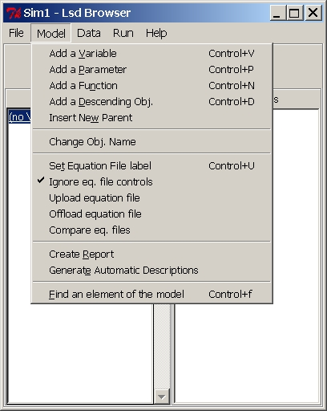

HyperManual Lsd
Windows Main Browser Lsd
FAQ's
Menu "Model"
This menu is used by the model's author to create or modify a model
structure
(see the hints on model structure building).
Therefore, it should never be used by users who want to run simulations
with an existing model: to change the numerical values in a simulation
configuration see the the Menu Data (for
model
specific values) or
Menu Run (for
general simulation settings).

Other Menus of the Browser:
Menu File
Menu Data
Menu Run
Menu Help
Menu "Model" Entries:
(Menu Model)Change
Object Name
Changes the label of the Object currently shown in the main Browser
or delete it (by assigning an empty string).
The name cannot contain any end-of-string character. An empty name
will cause the Object and all its descendants to be deleted. The field
To
Compute checked on (default) means that the Objects
descending
from the currently shown Object will be explored to have the contained
Variables computed. If the field is checked off the Variables contained
in the descending Objects (and their own descendants) will not be
computed
by default by the system. To be checked off to speed up the simulation
in case many instances contain only Parameters and no Variables. Note
that
Variables in these Objects may still be computed if they are requested
by other equations. However, their data cannot be saved.
(Menu Model)Add
a Variable.
Shortcut: control+v
Insert a new Variable in the Object currently pointed to by the
Browser.
The Variable label cannot contain string-terminating characters, that
is,
it can use: letters, digits and usual characters (underscores, dashes
etc.).
Lsd is case sensitive, therefore Price and PRICE are different.
Any instance of the Object currently pointed to by the Browser will
contain a copy of the newly created Variable.
For a simulation model to run it is necessary that for any Lsd Variable
defined in the model structure there exists an equation in the model
equation.
The equations are stored in an equation file that can be accessed and
modified
through LMM asking for the Equation
file
in menu Model.
The number of lags for a Variable indicate how many past values for
the Variable are used in the model's equations. That is, if the
Variable
Var1
is used in an equation with 2 lags (its value at two previous time
steps),
than when Var1 is created in the model it must be declared as
having
2 lags. As a consequence, before starting a simulation run the
Var1must
contain 2 initial values to be used at time t=1 and t=2 for use in the
equation where its past values are requested (see Init.
Values for setting the initial values).
In case of errors (e.g. when modeller specifies 0 lag for a Variable
that is requested by another equation with one lag), the system will
issue
an error message during the first attempt to run a simulation. It is
possible
to edit the name of a Variable, remove the Variable, or change its
lags,
by accessing the properties of the
Variable
clicking on its label in the main Browser.
(Menu Model)Add
a Parameter
Shortcut: control+p
Insert a new Parameter in the Object currently pointed to by the
Browser.
The Parameter is like a Variable without an equation: it does never
change
value during a simulation unless some equation in a model (attached to
a Variable) does not overwrite its value (for example, see the Lsd
function
write).
(Menu Model)Add
a Function
Shortcut: control+n
Insert a new Function. Functions are identical to Variable, in that
they have an equation which produces a numerical value when computed.
But there is a a single, crucial difference. While variables are always
computed at every time step, and the code for their equation is
executed once and only once in a time step, the code for Functions is
not executed unless the code in another equation requests its value.
And the code is re-computed every time it is requested, even many times
in the same time step.
Functions can be declared to store past values (in which case they need
initial values for the first time steps of the simulation). It is not
possible to save values of functions, since there is no (or not a
single) value for each time step.
(Menu Model)Add
a Descendant
Shortcut: control+d
This command inserts a new Object type descending from the one
currently
pointed by the Browser.
Lsd is case sensitive and does not accept spaces or other
string-terminating
characters for entities labels. Moreover, the label must be unique,
that
is cannot be identical to an Object already existing in the model.
The new Object type is inserted with a single instance in all the
instances
of the parent Object. To change the number of instances for the newly
created
Objects use the menu Data.
(Menu Model)Insert
a New Parent
Insert a new Object as a parent of the currently pointed by the
Browser.
Each instance of the currently pointed Object will be moved as
descendant
of the new, otherwise empty, Object. The same rules for Lsd labels
apply:
case sensitiveness and no string-terminating characters.
Note the difference with Add a Descendant: in the latter case, the
newly
created Object is added as descending from the currently shown Object.
In this case, instead, the new Object will be inserted between the
currently
shown Object and its previous parent. Of course, this command cannot be
used in Root, since this must be the top Object of any model.
(Menu Model)Equation
File
Shortcut: control+u
Assign to the model an equation file, that is, the file containing
the code for the equations of the model. The system should be able to
recognize
the equation file automatically (it reads the filename from the
makefile
when the first model structure is created, and then it is stored in the
configuration file). However, in some cases the modeller may want to
modify
it.
IMPORTANT: the code contained in the equation files is used by the
Lsd interfaces for presentation purposes only. Changing such a code
does
not modify the models equations, since this requires the re-compilation
of the code (see LMM introduction).
The code used to express the equations in Lsd is C++ for the
computational
operations (algebrical, logical, cycles etc.). In the equations a set
of
Lsd functions are used to retrieve the information about model's value
(see Lsd Equation Language)
(Menu
Model) Ignore equation file controls
Warning
This option and the other concerning the equation files do not affect
the behaviour of the model, but are used only to properly track changes
to a model during its construction. They are used to keep aligned the
development of the code and that of the Lsd configurations. Users of
existing model or developer of relatively simple models can ignore
these functionalities. They become useful when developing large models
with many different implementations tested at different times. In
practice, they permit to generate models with many different
differences without needing to open many folders in LMM.
The configuration of Lsd (i.e. names of the objects, variabls, etc.)
needs to be compatible with the code of the equations. When this option
is checked off, the browser compares the current equations (used in the
Lsd model program) with those used to generate the configuration. If
there is a difference, a warning message appears.
(Menu
Model) Upload Equation
File
Load into the configuration the equation files used to generate the Lsd
model program.
(See warning on equation files in the Lsd
configurations).
(Menu
Model) Offload Equation
File
Generate an equation file containing the equations stored in the model
configuration.
(See warning on equation files
in the Lsd configurations).
(Menu
Model) Compare Equation
Files
Compare the files for equations used to generate the Lsd model program
and that stored in the Lsd model configuration.
(See warning on equation files
in the Lsd configurations).
(Menu Model)Create
the report
The report is the most efficient way to present the model structure,
code and initial values of a configuration. It is composed by several
sections
listing the elements of the model (Objects, Variables and Parameters)
including
also the very code of the model equations. It is very useful because,
for
example, specifies which elements are used in an equation, and in which
equations an element it used. See the Lsd
Quick Help page on its content, or better try to build one and test
the automatic linking.
The creation of the model report is completely automatic, and the user
needs only to choose among few options. The following window sets the
available
options:

- Model title (by default it is the name of the model as
appears in
LMM). This title is placed in the top position of the report
- Variables listing format The report contains the
lists
of
Variables and Parameters for the whole model and for each object
separatedly.
It is possible to use scrolling boxes, where the HTML browser supports
them, or simple lists of text.
- First extra section and second extra section (default
Section 1
on and Section 2 off); the author can include up to two documents (text
or HTML formatted text) that are placed in the beginning of the report
as verbal introduction of the model. Check on the options to include
the
sections, set the name of the sections and to change the names of the
files
from which to take the text. If the field "Accept HTML formatting tags"
is set on the text is directly copied in the report. In this case, for
example, the character '<' is interpreted as the beginning of a
formatting
tag. Otherwise, the system translate the character as "<", so
that
in the report it will appear literally the lesser-than symbol.
- New name the report is saved under a different name. In
this
case,
the report will not be opened when the user calls it from the model
Help
of Lsd Model Browser.
(Menu Model)Generate
Automatic Documentation
This option should be used with care, since it replaces any current
documentation present in the model. Only modeller should use it when
upgrading
a model.
The documentation of a model element is a text associated with any
Object,
Variable or Parameter in the model, called Description. This text is
used
when the user clicks on the model element (see help on the main Browser)
and in the model report. Model
writers
are free to include any comment to the description of the item. The
documentation
for an item automatically list the Variables whose equation contains
the
label of the item. In this way, one is immediately aware where the item
affects the model's working. Moreover, the automatic documentation for
Variables includes also the early lines of comments included in the
beginning
of the Variable equation's code.
Generally, when a model is fairly complete, model writers may
generate
the automatic documentation as a base for a complete documentation of
the
model, before creating the model report.
It is possible to generate the automatic documentation for all the
elements
in the model (Objects, Parameters and Variables) or for Variables only.
This is because it is frequent the case of modifying the equations,
while
Parameters are not affected.
Note that it is possible to generate the automatic description for a
single item in its option window (see, for example, the help page for Variables
or Parameters)
(Menu Model)
Find an element of the model
shortcut: Control-f

This window permits to find a variable or a parametet in the model.
The Browser will point to the object containing the searched for
element, and the element will be selected. This searching functionality
is useful for large models with many elements.
Notice that the window above is endowed with autocompletion: while you
type the entry proposes the first element with the described initial
letters.
Hints on Model Structure Building
The model structure is the collection of Objects containing Variables,
Parameters and other Objects forming the backbone of the model. Given
the
Variables and Parameters the modeller decides to use in a model, the
problem
is to create the Object structure to contain them. This section gives
some
hints on how to decide in which Objects Variables and Parameters should
be placed in the model. The structure determines how many copies of the
Variables and Parameters a user will be able to define in a
configuration
(only Objects can be multiplied in many copies, each containing the
same
Variables, Parameters and descending Objects). The structure determines
also the results produce by the use of the Lsd functions in the
equations.
In the following it is assumed that the reader is already familiar
with
the basics of Lsd equation writing. In fact, generally the model
structure
is quite obvious for simple models, with few equations, while the
decision
on how to implement the structure can become a complex task only for
relatively
complex models. Therefore, we assume that a modeller has written the
(tentative)
code for few equations, and now is deciding how to implement the model
structure. Note that, depending on the structure, it is possible that
the
equations will need to be modified. In case of doubts, the best way to
ensure that an equation is computed exactly as expected, the modeller
will
use the Lsd debugger, which shows exactly
what
an equation does during a simulation run.
The discussion on the model structure is basically a discussion on
where
Variables and Parameters should be placed. To simplify the explanation,
we will consider only two Variables (it applies also to Parameters,
where
the equations are not involved). Suppose that we have written two
equations
for Variables x and y. There are two basic questions that the modeller
must answer when building the structure:
- Should I place Variable x and Variable y in the same Object or in
different
Objects?
- Given that x and y must be in different Objects (say X and Y
respectively),
should these Objects be related hierarchically or not? In other words,
should one Object contain the other, or "parallel" in the model
structure?
To answer the first question the modeller needs to consider the case of
a configuration where there are many copies of the Variables x and y.
If
the two Variables are placed in the same Object, then they must will
always
replicate in the model in the same number. That is, there will be as
many
copies of x's as y's. If this makes sense, given the meaning of x and
y,
then almost certainly placing x and y in the same Object is the correct
answer. Instead, if the reality represented in the model can be
implemented
with different numbers of copies of x and y, then they would
necessarily
be placed in different Objects.
The second question is more tricky, and this is due to the fact that
each Object type in a model structure can be replicated by users in a
configurations
in many copies. And that any copy of an Object must be exactly the same
(that is, with the same type of Variables, Parameters and descending
Objects),
although the numbers may differ (e.g. values of Parameters, number of
copies
of descendants). The modeller decides the model structure once and for
all, but when the model is released to users, they can (and will)
change
the number of copies. Therefore, the modeller must ensure that the
model
structure provides the necessary constraints such that the model's
consistency
is kept whatever numerical configuration is decided by users. So,
placing
X as descending from Y, means that every copy of Y will contain at
least
one copy of X, and possibly many. Instead, placing them "parallel" in
the
hierarchy, e.g. both descending from the same Object, can allow to
define
model configurations with as many copies of Y and X as desired, with no
constraints.
Therefore, a first criterion that can be used to decide whether to
place
X as descendant of Y, place Y as descendant of X, or just parallel, is
to see if, in the interpretation of the model meaning, it makes sense
that
X must always have more copies of Y, Y have more copies of X, or if
this
is not relevant.
However, the definitive decision must come from the understanding of
the use of the model structure by the Lsd simulation manager, i.e. how
the model structure affects the computation of the model equations. For
simplicity, let's assume that the equation for a Variable in X, say x,
needs to use the an element contained in Y, suppose the Variable y: x =
f(y). If this is not the case, the decision does not, of course, change
the way Lsd computes the equations. Otherwise, the structure is
decisive
to determine which copy of y is used when computing the equation for
one
copy of x. This is due to the fact that in Lsd the model writer does
not
specify where to get the values required, but only their label, much
like
difference equation notation. During a simulation, at the very moment
the
equations are computed, the system automatically tries to satisfy the
requests
written in the equations code. Therefore, the modeller must use one of
the Lsd functions to implement the desired
computation
(i.e. choose the correct copy of y for each copy of x). These functions
are implemented in such a way to write in extremely simple ways the
most
obvious operations, even when these involve a lot of operational
complexity.
Let's now see how the desired value for a Variable (y) is retrieved in
different ways within an equation (x), depending on the model
structure.
As said, we need to consider that a model configuration can have
many
copies of Object X and of Y, and therefore also many copies of the
Variables
x and y. The same equations code for x will be used by all the copies
of
x.
We may have three cases, depending on the relation between Objects
X and Y in the model hierarchy:
- many copies of x need to compute their values using the value of
a
single
copy of y. In this case, the Object X must be placed as descendant of Y
(Y is a high level Object that contains Object X). This is, for example
the case where x is the Variable Profit contained in Object Firm (X)
computed
with the Variable Price (y) contained in Market (Y). There may be many
copies of Objects Market and of Objects Firm, but any group of Objects
Firm will always use the value same copy of Price. That is, each Market
(one or more copies) will have many copies of Object Firm as
descendants.
In this case, the modeller can use in the equation for Profit the line:
v[0] = p->cal("Price",0);
and the system will automatically ensure that any copy of Profit (x)
will execute its equation using the value of Price (y) taken from the
copy
of Market (Y) that contains the copy of Object Firm whose equation for
Profit is under computation. - each copy of x needs to use many
copies of y, and always the
same. In this
case X must be defined as container of Y. For example, this may be the
case where Variable Price (x) contained in Market (X) is computed from
a demand function over the sum of the values of Variable Quantity (y)
contained
in Firm (Y). In this case, the modeller can use in the equation for
Price
the line:
v[0] = p->sum("Quantity",0);
and the system will automatically ensure that any copy of Price will
use the values of Quantity taken from the same copies of Objects Firm.
Note that a line like this:
v[0] = p->cal("Quantity",0);
will always return only the value of Quantity contained the very first
copy of Firm descending from Market (see the description of Lsd
function cal(...). - any time a copy of x is computed it needs
to use a (potentially)
different
copy of y. In this case, Objects X and Y must be placed as descendants
from a common Object, say Z. Note that the modeller must provide an
explicit
equation to determine which copy x must use any time is computed. As
example
consider the Object Consumer (X) containing the Variable Money (x)
which
needs to use the Variable Price (y) contained in Seller (Y). There are
many Objects Consumer and Seller, and a Consumer can choose any one
copy
of the Objects Seller (assume that Object Seller has a Paameter
providing
a unique identification number for each Seller). The model structure
should
then be such that the Object Market (Z) contains a Variable Choose and
both Objects Consumer and Seller, each potentially replicated in many
copies.
The equation for Money will then have the lines:
v[0] = p->cal("Choose", 0); //ask
Choose
in Z to choose a seller
cur = p->search_var_cond("IdSeller", v[0], 0); //find
the Seller with the given IdSeller
v[1] = cur->cal("Price",0); //take the
Price
of the chosen Seller
The first line asks Choose to compute the identification number of
one Seller (for example, a random choice proportional to the Seller's
market
shares). The second line asks the system to find the copy of Object
Seller
with the chosen identification number. Finally, the third line uses
that
copy to obtained the desired value of Price. The equation for Choose
may
contain the lines:
cur=p->draw_rnd("Seller", "ms",0);
res=cur->cal("IdSeller",0);